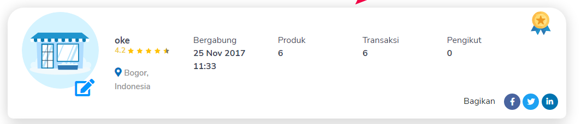

19 Oktober 2022

saya mau bernostalgia ketahun 2017, yang dimana tahun tersebut merupakan pertama kalinya saya mencoba jualan online
saat itu saya suka melihat-lihat produk non-fisik atau bisa disebut juga produk digital
sampai seketika saya mempunya ide untuk berjualan produk digital juga
ide yang terlintas dipikiran saya saat itu adalah berjualan template blogger
saya buatlah template blogger yang fungsinya bukan untuk konten melainkan untuk menyembunyikan link asli (safelink)
seperti biasa sebelum membuat sesuatu saya selalu melakukan riset kompetitor, fitur, dan mencari inspirasi
singkat cerita setelah berhasil membuat template safelink tersebut, saya langsung membuat akun dimarket place digital dan memposting produk digital saya tersebut
saat itu saya tidak berharap banyak, saya pasang harga dikisaran 5 dolar atau stara 60 ribuan
hari-hari berlalu saya bersemangat untuk mengecek market place
tapi tetap tidak ada yang beli, wkwkwkwk...
namun setelah lumayan lama ternyata ada orderan masuk dan langsunglah saya proses
file template saya kirim lalu melakukan konfirmasi dan terjualah produk digitla pertama saya
tidak lama setelah terjual, produk digital tersebut mulai ada yang beli lagi kalau tidak salah kisaran sampai 5-6 pembeli
saat sampai kepenjualan terakhir saya memilih berhenti untuk menjualnya dan menghapus produknya
ini karena ada yang membeli dan memberi rate bintang 1 dan saya mendapat review pedas, sampai-sampai saya kena mental
saya langsung chat pembeli tersebut, apa masalahnya dan dia hanya membalas begini dan begitu tanpa ada niatan untuk dibantu
sayapun mencoba untuk mengembalikan uangnya tapi tetap dia menolaknya, seakan-akan memang sengaja dia membeli produk tersebut untuk menjatuhkan ratingnya...
tahun-tahun berlalu, saya masih suka melihat marketplace tersebut sampai sekarang
melihat akun saya masih ada, saya jadi memiliki sudut pandang yang berbeda
saya melihat sudut pandang review tersebut dengan cara yang berbeda
saya paham maksudnya tujuan orang tersebut memberi review pedas seperti itu maksudnya apa
kalau sekarang saya lihat produk tersebut, saya akan menutup mata dengan tangan untuk melihatnya karena seperti produk gagal wkwkwkw
Penutup
mental itu penting
gak selamanya usaha akan selalu mudah ada aja hal yang bakal membuatnya susah
saat terakhir kali saya mau melihat history reviewnya ternyata sudah tidak ditampilkan lagi, jadi hanya tampil profil dengan total rating saja